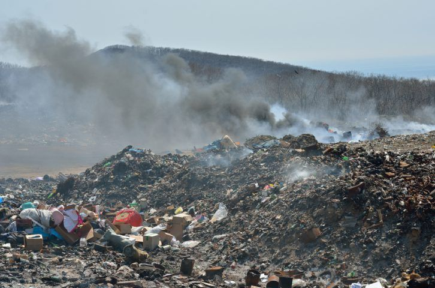
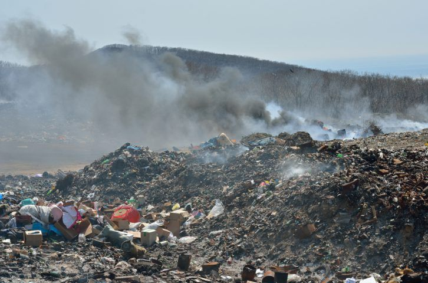

🃠Polusi merupakan salah satu masalah lingkungan yang paling serius dan berdampak luas. Polusi udara terjadi akibat emisi kendaraan bermotor, asap industri, serta pembakaran bahan bakar fosil seperti batu bara dan minyak bumi. Zat berbahaya seperti karbon monoksida (CO), nitrogen dioksida (NO₂), dan sulfur dioksida (SO₂) dapat menyebabkan gangguan pernapasan, penyakit paru-paru, dan bahkan mempercepat pemanasan global. Selain itu, polusi udara juga berkontribusi terhadap hujan asam yang dapat merusak tanaman , tanah, dan bangunan. 🚗ğŸ
🌊 Polusi air terjadi akibat pembuangan limbah rumah tangga, industri, dan pertanian yang mencemari sungai, danau, serta laut. Limbah beracun, minyak, dan plastik yang mencemari air mengancam kehidupan biota laut dan mengurangi ketersediaan air bersih bagi manusia. Air yang telah tercemar dapat menyebabkan berbagai penyakit seperti diare, kolera, dan keracunan logam berat. 🐟🦐
🌱 Polusi tanah juga menjadi ancaman serius karena disebabkan oleh pembuangan sampah sembarangan, penggunaan pupuk dan pestisida berlebihan, serta limbah industri yang meresap ke dalam tanah. Tanah yang tercemar akan kehilangan kesuburannya, sehingga sulit untuk digunakan dalam pertanian dan menyebabkan gangguan pada ekosistem yang ada. 🌿🧑‍🌾